אלבום אישי
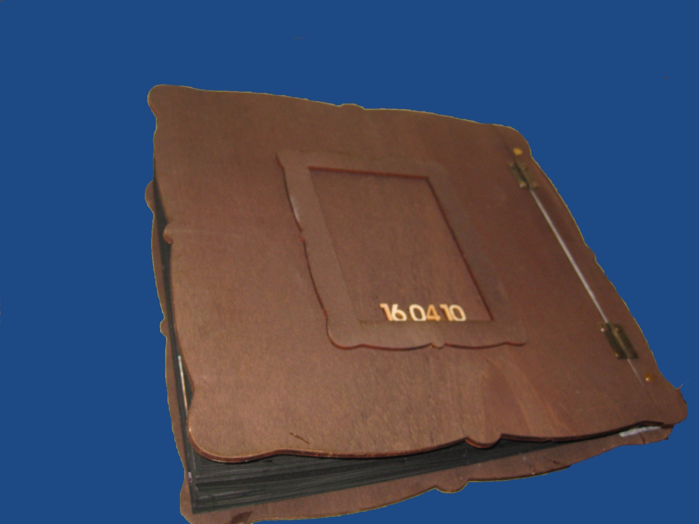
קהל יעד:
מתנה זו נועדה לתת אוסף של ברכות, ספר זכרונות.
את הרעיון הראשוני ניתן למנף החל מאוסף ברכות, דרך ספר זכרונות ועד לספר של "חיים שכאלה".
יצירת המתנה תלויה בשליחת ברכות ע"י א.נשים, כדי לקבל שיתוף פעולה רצוי לאפשר לשלוח ברכות בווצאפ / מייל ולהדפיס אותן.
הסדר בו אני בחרתי לדפי האלבום הוא לפי קבוצות. לדוגמא משפחה ואז חברים, ובתוך הקבוצות לפי קרבה.
מצרכים:
- אלבום – עדיפות לכזה הבנוי מדפי קרטון שחורים
- דבק "ביג" (ממש יודע להדביק הכל)
- דבק "הנזו" (מצוין להדבקת תמונות)
- קישוטים / חומרי יצירה מסוגים שונים
- ברכות ותמונות – רצוי לבקש לשלוח בנפרד ברכה ותמונה (כלומר לא לשלוח את התמונה כחלק מהקובץ שמכיל את הברכה), לציין שאפשר לשלוח עד 3 תמונות, כדי למנוע כמות גדולה מדי של תמונות, רוב הדפים יכילו תמונה או שתיים
אופן ההכנה:
חומרים לעיצוב דפי האלבום:
את חומרי הגלם להכנת האלבום ניתן לרכוש בחנויות כמו מקס-סטוק, או חנויות יצירה שונים.
אפשר ורצוי להשתמש בדברים שיש בבית כמו נייר אפיה, ניילונים בצבעים שונים, כיד הדימיון הטובה עליך.
המלצה: לקבל קודם את הברכות, ורק אז להשקיע בחומרי עיצוב, כך שיתאימו לברכות.
כנ"ל לגבי התמונות. ככל שתדפיסו כמות תמונה גדולה יותר, כך יורד המחיר. אל תתעצלו וחפשו מקומות שמדפיסים בזול יחסית. איכות התמונה חשובה אבל היא לא העיקר. אפשר כמובן גם להדפיס במדפסת צבע אם יש.
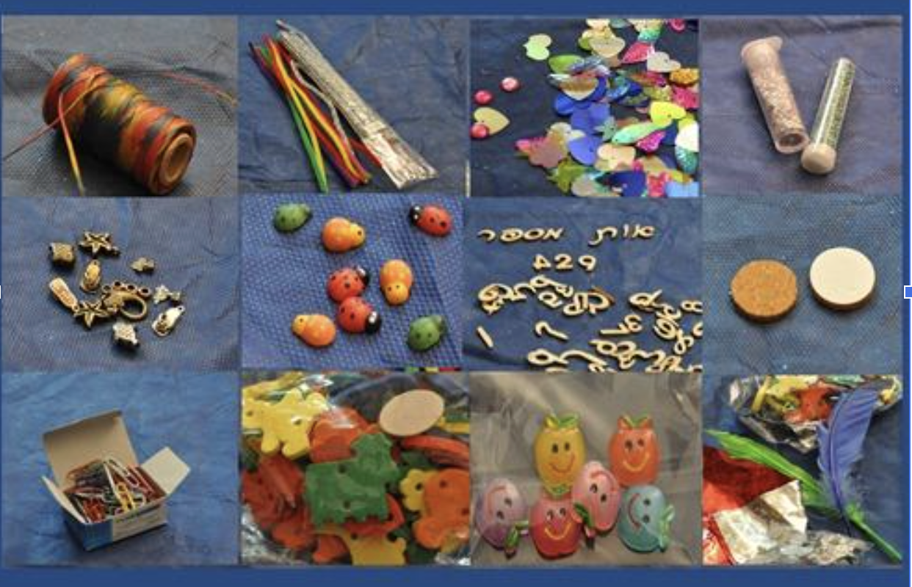
להלן עיצובים שונים של דפי האלבום. היצרתיות היא אינסופית, כל דבר יכול לשמש חומר גלם.
עיצוב 1: ברכה עם חליל ושרשרת
עיצוב זה משלב דף בסיס עליו מודבקת הברכה בשני קטעים. החתימה היא עם תמונה של חליל כיוון שהברכה עצמה עוסקת בנושא. המברכת היא אישה ולכן יש גם שרשרת עם דמות נקבה.
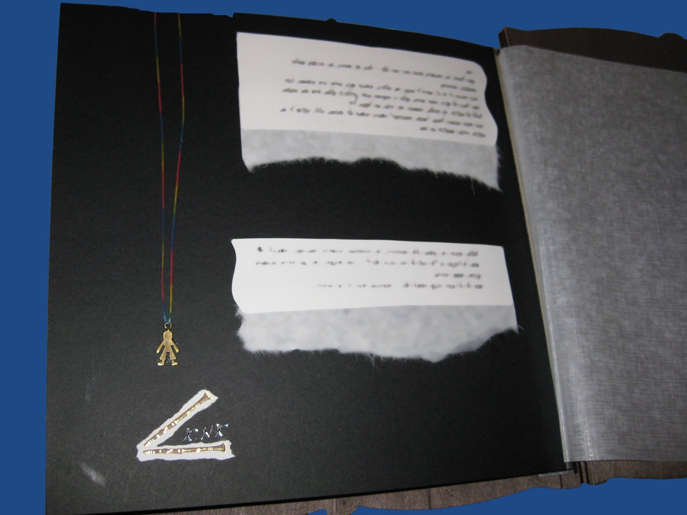
עיצוב 2: לאנשים שלא רוצים לכתוב
עיצוב זה נועד לאנשים הרוצים להיות חלק מהאלבום אולם לא רוצים לכתוב. העיצוב במקרה שלפנינו מציג אדם המצלם ואוהב את הים. כמובן שיש להתאים את העיצוב לאופי האדם הנותן.
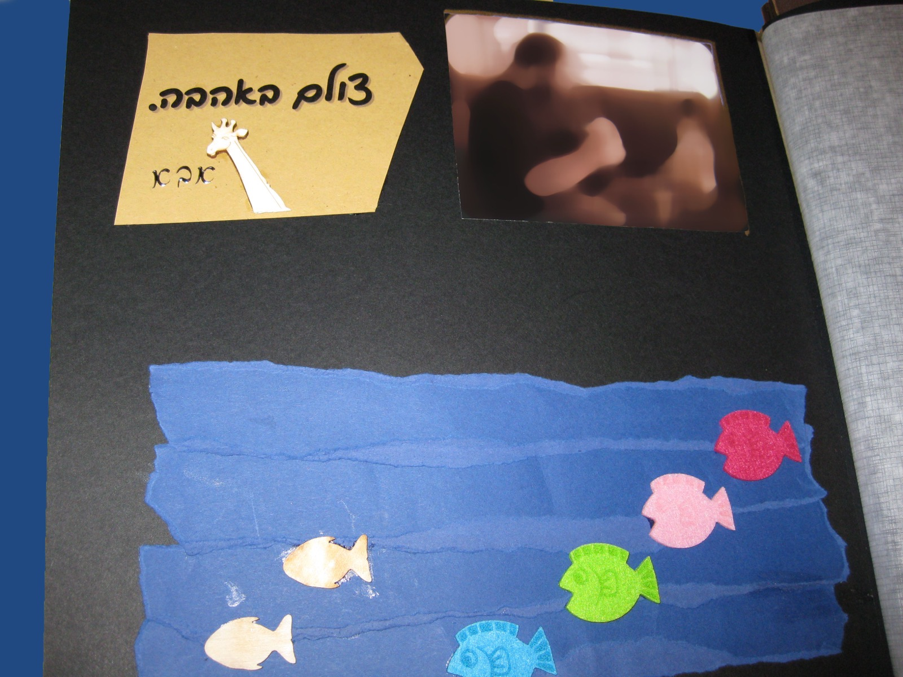
עיצוב 3: מספר אנשים מברכים יחד
עיצוב מכמה אנשים שמברכים יחד. ליד כל דמות שם הנותן. מתאים לברכה הניתנת ממשפחה עם ילדים, כך אפשר לתת לכל אחד ייצוג. הברכה עצמה מודפסת על דף שנקרע ביד.
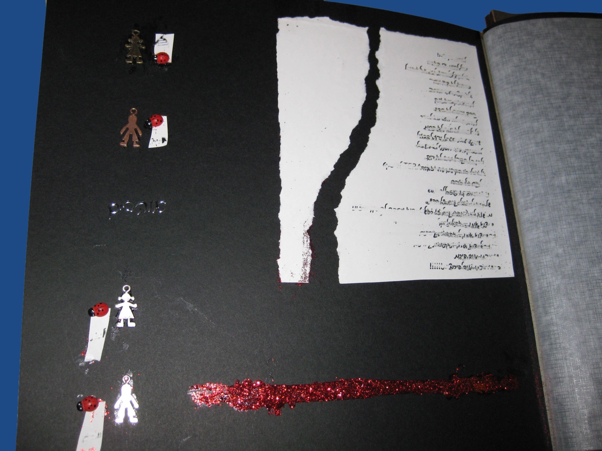
עיצוב 4: צבעי כסף ונצנצים
עיצוב בצבעי כסף, נצנצים, תליון (לא מכסף אמיתי :)). השם נכתב באמצעות שכבת דבק עבה יחסית המאפשרת ליצור תבליט.
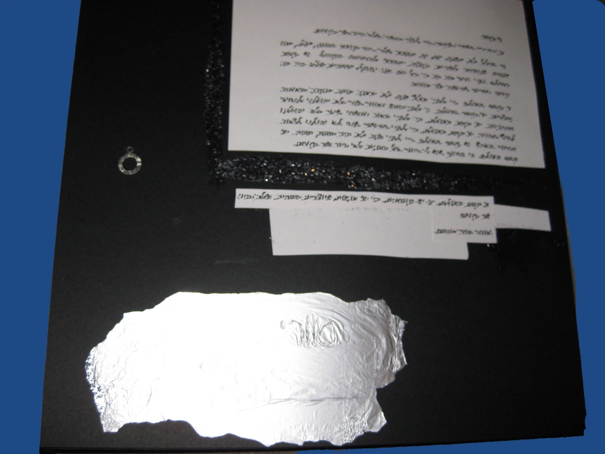
עיצוב 5: ברכה עם תמונה וחיפושיות
עיצוב המאחד ברכה עם תמונה. התמונה נגזרה לשם העיצוב, דף הברכה נקרע ביד וסביבו הודבקו חיפושיות בירוק. השם הובלט מאותיות עץ.
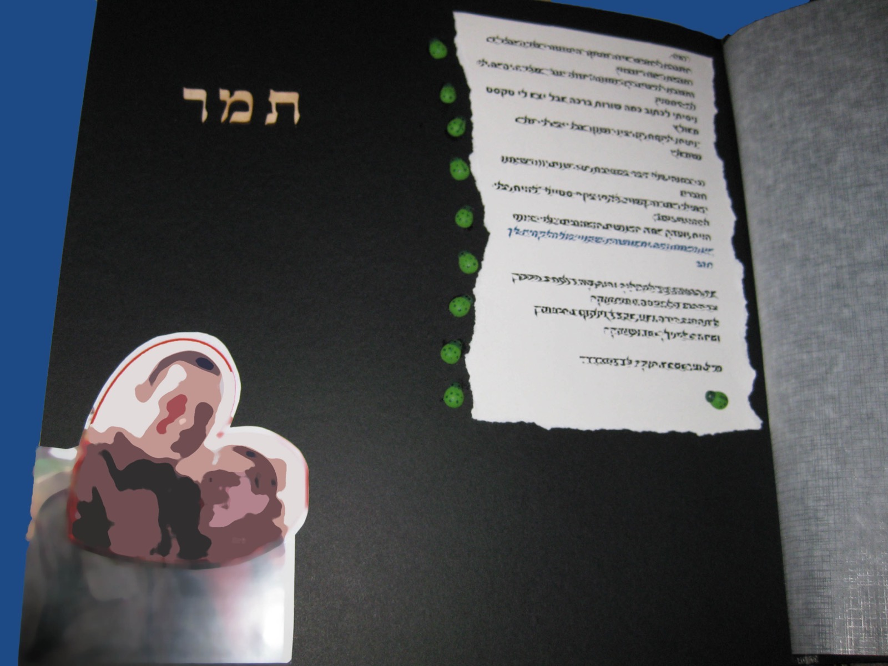
עיצוב 6: מספר תמונות ופרפרים
עיצוב ברכה עם מספר תמונות שנשלחו מנותנת הברכה. חיתוך של התמונות, פרפרים ממתכת בורוד נותנים עוד קצת צבע ועיצוב.
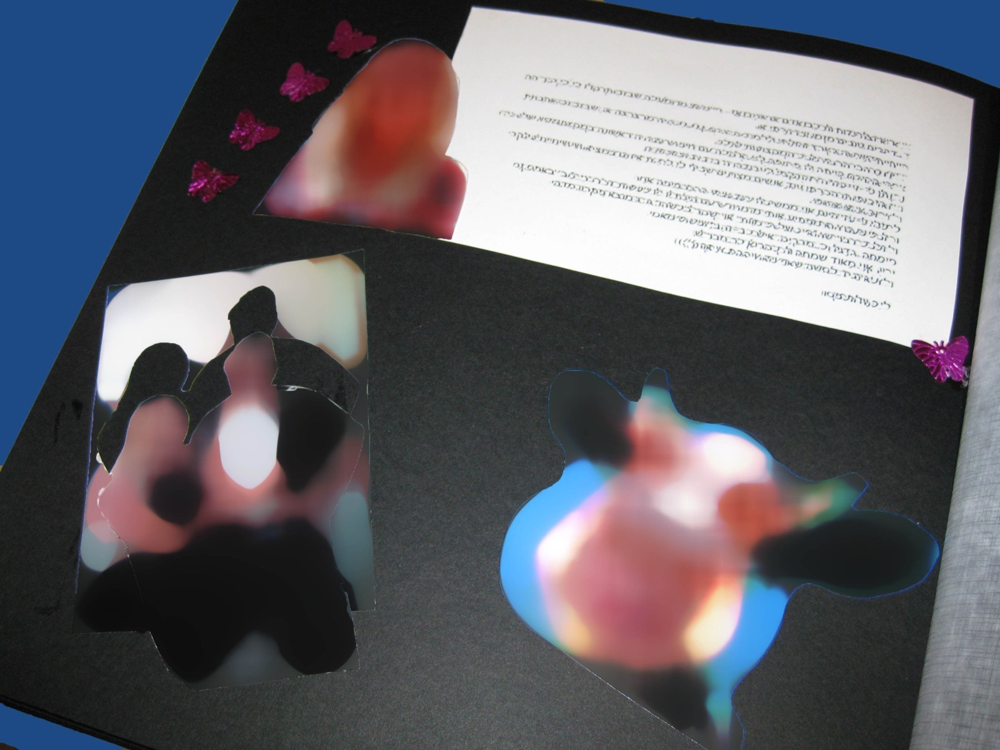
עיצוב 7: איש מחשבים
נותן הברכה הוא איש מחשבים ועל בסיס זה עוצב הדף.
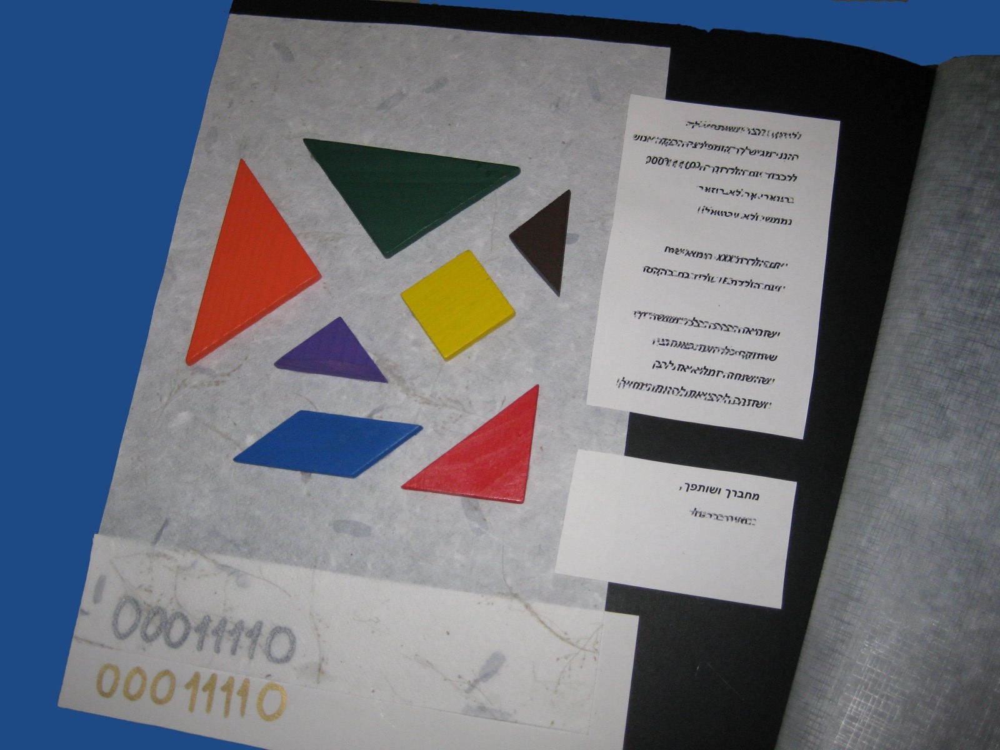
עיצוב 8: משחק עם תמונות
עיצוב המשחק עם תמונות ועם ברכות ממספר אנשים.
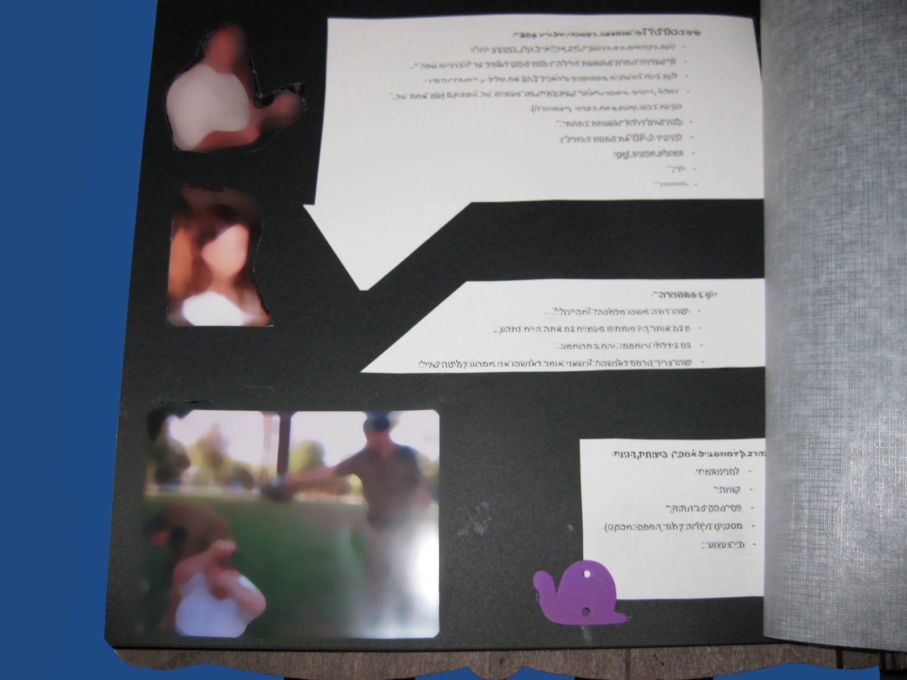
עיצוב 9: סולידי עם זיגזג
עיצוב "סולידי", נייר הברכה נגזר עם מספרי זיגזג.
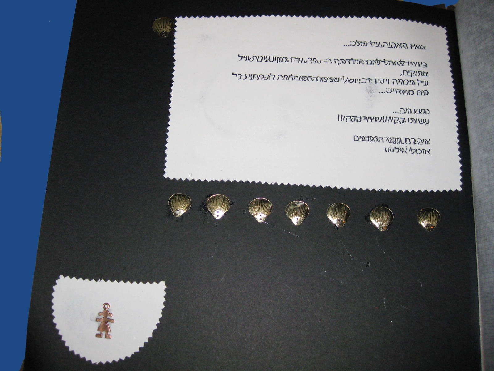
עיצוב 10: משחק עם הנייר
עיצוב המשחק עם הנייר, ומשלב אלמנטים להכנסת צבע.
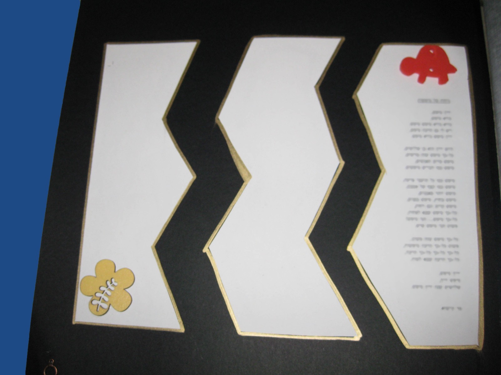
עיצוב 11: כלי נגינה
עיצוב המשחק עם עולם המוזיקה.
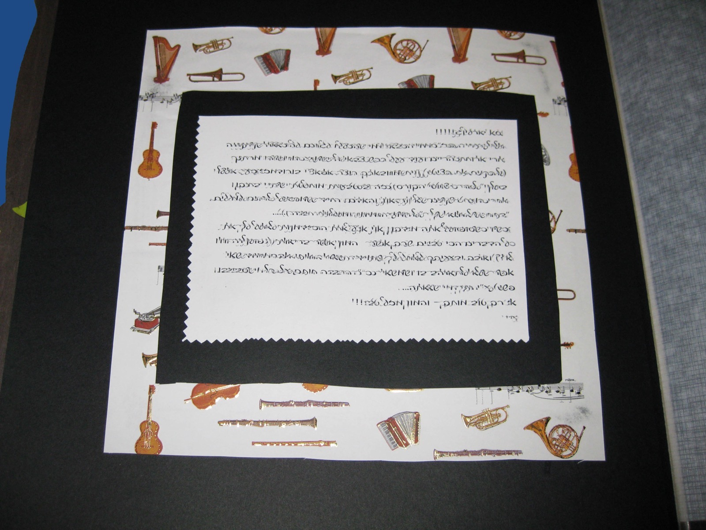
עיצוב לדף סיום:
עיצוב לדף הסוגר את האלבום.
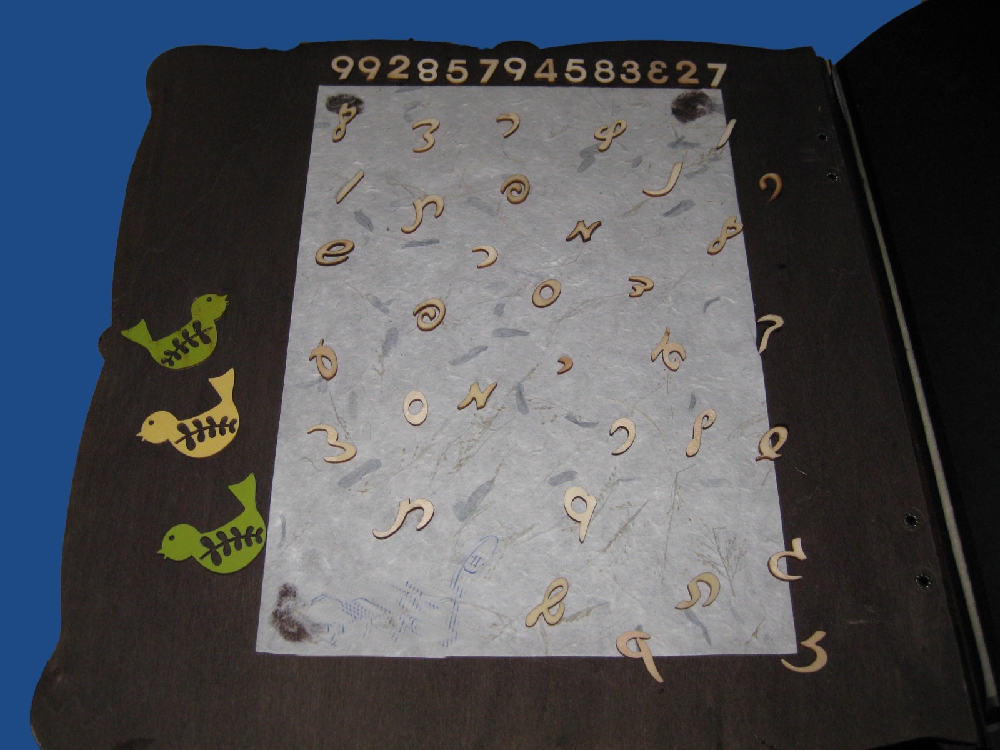
עיצוב ללא ברכה:
אם נשארים דפים באלבום עצבו אותם בלי ברכה, הניסיון מלמד שגם הסרבנים העקשנים ביותר "רוצים גם" ברגע שהם רואים את האלבום.
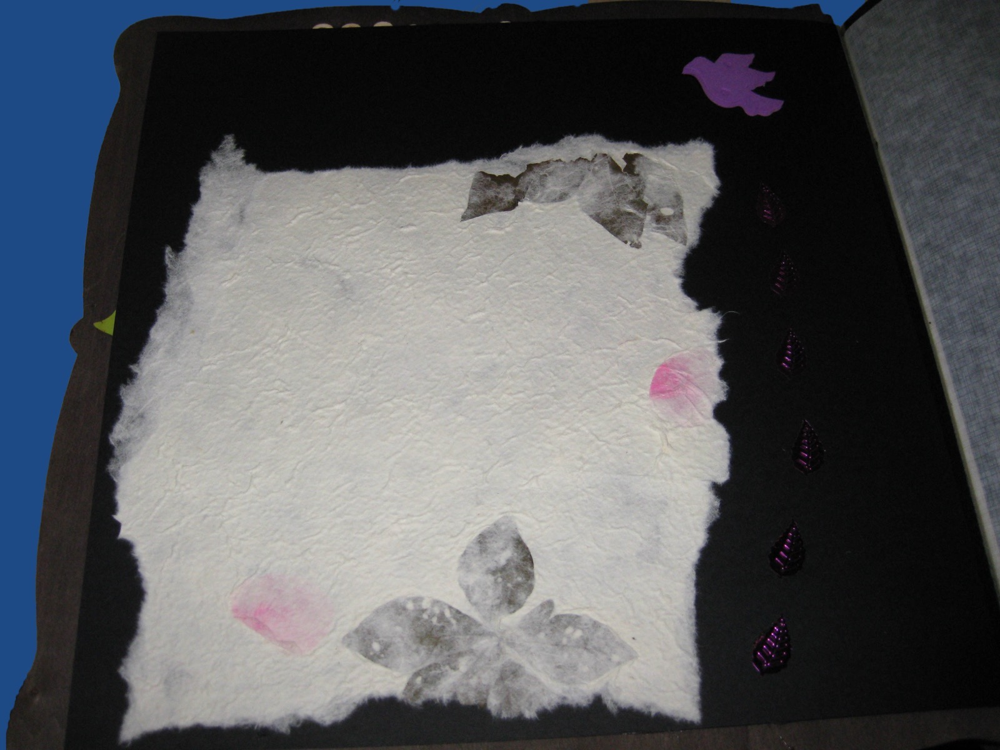
🥵 החלק הקשה הוא לקבל ברכות מא.נשים 🥵
😮 החלק הכיף הוא ההפתעה הגדולה כשהם מגלים את האלבום 🫢